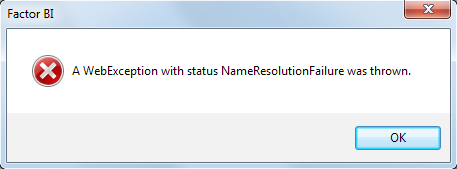

Troubleshooting¶
When make a successful synchronization the following dialog appears.

If you face any errors, try looking here.
Syntax error¶
Misspelled fields or tables on customData.json may appear as:

No Internet Connection¶
When no internet connection available, the following message appears:

Firewall Restrictions¶
If your internet connection has a firewall, it may show different errors like:
- The remote name could not be resolved.
- A WebException with status SendFailure was thrown.
- A WebException with status NameResolutionFailure was thrown.
- Error making request with Error Code ExpectationFailed and Http Status Code ExpectationFailed.
Grant Firewall to reach Amazon S3¶
Create a policy to Allow to:
54.230.0.0/1552.192.0.0/11

AWS can have multiple IP addresses for S3 service, so in case the above IP's don't work check the AWS Public IP Address Ranges documentation and look for
"region": "GLOBAL",
"service": "AMAZON"
and
"region": "us-east-1",
"service": "AMAZON"
https://ip-ranges.amazonaws.com/ip-ranges.json
No information to Sync¶
If No information to Sync message appears, verify that customData.json is set to send at least one table.
Waiting time¶
Bipost Sync may take from a few seconds to several minutes to extract from on-prem DB and upload to AWS. While this is happening no messages/icons will show that biPost.exe is working and maybe you'll see (Not responding) on the top of the window, this is normal.
If you launch Windows Task Manager probably you'll see that biPost.exe *32 is running and consuming a considerable amount of CPU.
Once the information is uploaded to AWS, it is usually available on Aurora-MySQL very fast. If a big data set was uploaded it may take up to 5 minutes to be available on Aurora.
Verify which tables where loaded by querying aurora_s3_load_history table like this:
SELECT * FROM mysql.aurora_s3_load_history WHERE file_name REGEXP 'mytablename' ORDER BY load_timestamp desc;
Optionally convert load_timestamp to your local time, e.g.: CONVERT_TZ(load_timestamp,'UTC','America/Mexico_City')
Upload Limit¶
Depending on the number of rows and columns on each table, it is possible that a large amount of data sent on a single sync may not load to Aurora-MySQL.
We have tested up to 1.5 million rows on a single sync or 280 MB uncompressed files.
We recommend using Recursive Sync for big tables that have a date field available.
Special Characters¶
Line breaks are not supported and thus removed.
Schema Limitations¶
Only tables with a PRIMARY KEY are available to synchronize. If a table does not have a PRIMARY KEY an error message will appear.
As a workaround, you can manually create the tables with a PRIMARY KEY on Aurora-MySQL and then synchronize. On-prem schema changes (e.g. adding columns) will not synchronize unless on-prem tables use primary keys.
MySQL schemas are created but no data is loaded¶
Two things might be causing this problem:
1. RDS instance cannot reach S3 bucket.¶
When we look at our CloudWatch logs, we see Unable to initialize S3Stream, so do the following:
- Go to RDS Clusters and check if IAM Role is listed and active for your cluster.
If you manually created AWS Services then:
-
Check if your IAM Policy to Grant Access to S3 is set correctly using the S3 bucket ARN we provided. Also double check the policy document (JSON).
-
Check that IAM Role has attached the former IAM Policy. Copy ARN Role to a notepad for next steps.
-
Go to RDS Parameter Groups, select the cluster group and click Compare Parameters, it should show the IAM ARN Role (the one you just copied on a notepad) on the parameters shown here.
-
Double check IAM roles attached to your instance querying
show global variables like '%role%'
After this, if you still experience this error, check out Manually debugging S3Stream.
2. Name of your MySQL database must be all lower case.¶
When we look at our CloudWatch logs, we see:
SequelizeConnectionError: ER_BAD_DB_ERROR: Unknown database
Double check that your DB name is all lower case.
Debugging S3Stream¶
In this section we will manually upload data to Aurora-MySQL. The goal here is to see whether an error is shown while directly importing data from S3 to Aurora-MySQL.
Create Dummy Table¶
Using MySQL Workbench open a connection to your MySQL instance using root account.
Let's create a dummy table:
CREATE TABLE `dummytable` (
`CIUDAD_ID` int(4) NOT NULL,
`NOMBRE` varchar(50) COLLATE latin1_spanish_ci NOT NULL,
`CLAVE_FISCAL` varchar(3) COLLATE latin1_spanish_ci DEFAULT NULL,
`ES_PREDET` char(1) COLLATE latin1_spanish_ci DEFAULT NULL,
`ESTADO_ID` int(4) NOT NULL,
`USUARIO_CREADOR` varchar(31) COLLATE latin1_spanish_ci DEFAULT NULL,
`FECHA_HORA_CREACION` datetime DEFAULT NULL,
`USUARIO_AUT_CREACION` varchar(31) COLLATE latin1_spanish_ci DEFAULT NULL,
`USUARIO_ULT_MODIF` varchar(31) COLLATE latin1_spanish_ci DEFAULT NULL,
`FECHA_HORA_ULT_MODIF` datetime DEFAULT NULL,
`USUARIO_AUT_MODIF` varchar(31) COLLATE latin1_spanish_ci DEFAULT NULL,
PRIMARY KEY (`CIUDAD_ID`)
) ENGINE=InnoDB DEFAULT CHARSET=latin1 COLLATE=latin1_spanish_ci;
LOAD DATA FROM S3¶
Replace curly brackets with your parameters:
- my-bucket-name: Name of your dedicated bucket.
- my-database-name: Name of your database on MySQL.
Now run on Workbench:
LOAD DATA FROM S3 's3-us-east-1://{my-bucket-name}/DUMMYTABLE.csv'
REPLACE INTO TABLE `{my-database-name}`.`dummytable`
CHARACTER SET 'utf8'
FIELDS TERMINATED BY '|'
ENCLOSED BY '\"'
LINES TERMINATED BY '\r\n'
IGNORE 1 LINES
(CIUDAD_ID,NOMBRE,CLAVE_FISCAL,ES_PREDET,ESTADO_ID,USUARIO_CREADOR,FECHA_HORA_CREACION,USUARIO_AUT_CREACION,USUARIO_ULT_MODIF,FECHA_HORA_ULT_MODIF,USUARIO_AUT_MODIF);
Example
LOAD DATA FROM S3 's3-us-east-1://bipostdata-123456789012/DUMMYTABLE.csv'
REPLACE INTO TABLE `mytestdb`.`dummytable`
CHARACTER SET 'utf8'
FIELDS TERMINATED BY '|'
ENCLOSED BY '\"'
LINES TERMINATED BY '\r\n'
IGNORE 1 LINES
(CIUDAD_ID,NOMBRE,CLAVE_FISCAL,ES_PREDET,ESTADO_ID,USUARIO_CREADOR,FECHA_HORA_CREACION,USUARIO_AUT_CREACION,USUARIO_ULT_MODIF,FECHA_HORA_ULT_MODIF,USUARIO_AUT_MODIF);

LOAD FROM S3 privileges¶
The Aurora user that executes LOAD DATA FROM S3 requires the following privilege:
GRANT LOAD FROM S3 ON *.* TO 'your-user-name';
By default this privilege is set to your Master Username when you created your Aurora instance.
If you are using a different user and the privilege is not set, the following error appears:
Access denied; you need (at least one of) the LOAD FROM S3 privilege(s) for this operation
The only way to see this error is executing LOAD FROM S3 manually.
If your MySQL user already has this privilege and you see the following error, try these steps.
Access denied for user 'your-user-name'@'xx.xx.xxx.xxx' (using password: YES)
Firebird column name starts with underscore¶
Firebird SQL does not naturally support creating colums names starting with underscore, so avoid that on Aurora if your on-prem DB is Firebird.
Token unknown - line 1

Need more help?¶
Please send us an email to: info@factorbi.com